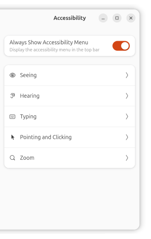

|
 |
Acceso para todos No corazón da filosofía de {{ DISTRO }} está a crenza de que a informática é para todos. Con ferramentas de accesibilidade avanzadas e opcións para cambiar o idioma, as cores e o tamaño do texto, {{ DISTRO }} facilita a informática, sexa quen sexa e esteas onde esteas. Compatibilidade lingüística Lector de pantalla Orca LibreOffice Writer |